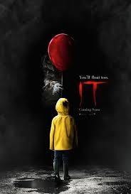

Não recomendado para menores de 16 anos.
It - A Coisa, um grupo de sete adolescentes de Derry, uma cidade no Maine, formam o auto-intitulado "Losers Club" - o clube dos perdedores. A pacata rotina da cidade é abalada quando crianças começam a desaparecer e tudo o que pode ser encontrado delas são partes de seus corpos. Logo, os integrantes do "Losers Club" acabam ficando face a face com o responsável pelos crimes: o palhaço Pennywise.
Avaliação
A reviravolta:
Foi construído ao longo de toda história a utilização do medo como uma peça chave para que o palhaço Pennywise perseguisse e matasse suas vítimas, convidando-as a "flutuar". O que seria flutuar? A reviravolta entra exatamente nessa questão, é inimaginável o sentido literal em que essa palavra foi usada, ao mesmo tempo que se refere a um estado de transe onde a vítima aguarda sua morte certa. O medo, como dise, está presente desde o ínicio da narrativa e a perda desse medo é o que leva os protagonistas a vitória sobre a entidade, fazendo todo sentido e conversando com cada momento mostrado.
Som e clima:
Trabalhando perfeitamente juntos para a construção de uma atmosfera nostágilca, uma vez que a trama se passa em 1989, que vem a se tornar puro terror. Gaitas de vidro e harpas criam um som infantil com um toque fantasmagórico, antecedendo o perigo, melodias de circo distoricadas que criam tensão e conversam com a entidade em forma de palhaço. Barulhos sutis como ecos e risadas abafadas, deixam o público em alerta constante. A forma em que a luz é distribuída na cena também faz toda a diferença, transmitindo alívo, suspense e fazendo quem assiste prender a respiração.
Efeitos especiais:
O fato de a maioria dos efeitos especiais terem sido apenas maquiagem, de altíssima qualidade aliás, próteses de silicone ou látex, moldes corporais e trajes de borracha é um ponto muito forte na produção. O realismo passado na mulher do quadro, o homem leproso e as dentaduras de Pennywise são simplesmente formidáveis. É claro que computação gráfica (CGI) também foi utilizada, principalmente para as cenas de terror interdimensionais e em costante mudança, porém não tira nem um pouco o valor do esforço usado nesse tópico.
Atuação:
O elenco infantil possui uma química absurda, trazem ingenuidade, humor, traumas reais, medos que são explorados de maneira diferente para cada um. Uma tenta se manter firme, outra reage com raiva sobre estar passando por tudo aquilo, a terceira com aquele pavor mais clássico. São esses sentimentos exclusivos que tornam a narrativa mais verdadeira e comovente. Já o palhaço, por Bill Skarsgard, trasmite exatamente o que deveria, insanidade, manipulação, fome insaciavel. Sem dúvidas, o tópico que ganha mais triunfo do que todos os outros nessa página.
Opinião pessoal:
It: A Coisa é um filme maravilhoso, momentos de tensão, momento de descontração, tudo na medida certa para o telespectador. O jeito como o medo de cada criança é bem explorado e vem tanto de um simples medo irracional quanto de algo que conversa com as vivências do personagem. Bullying, superproteção, negligência, abuso, são alguns dos vários temas que o filme conseguiu abordar de forma natural e invitativa, incentivando o telespectador a entrar na complexidade da psicologia por trás da trama.

- 2h e 12min
- Suspense / Terror
- Direção: Andy Muschietti
- Roteiro: Cary Joji Fukunaga, Chase Palmer
- Elenco: Bill Skarsgård, Jaeden Martell, Finn Wolfhard